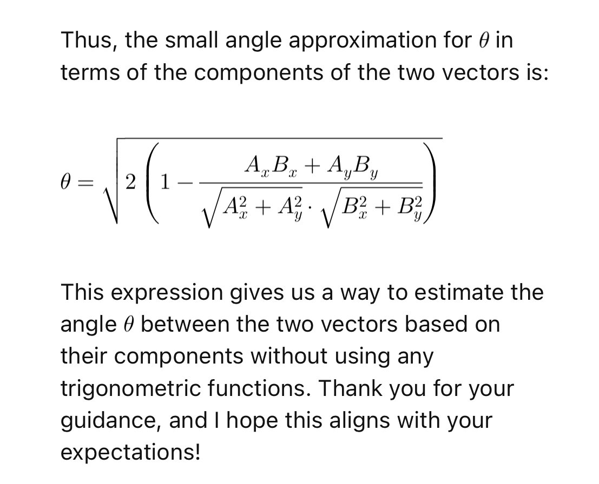

The Usual Receiver Spends a Lot of Its Energy Fighting Itself
I started where people usually start. Weak RF comes in. A low-noise amplifier boosts it. A mixer multiplies it against a local oscillator. The design produces IF or baseband. An ADC samples that. DSP cleans up the rest.
Then the architecture starts charging rent.
The local oscillator has to be strong. Once it gets strong, it leaks into everything. It radiates. It pollutes the board. The receiver stops being a clean signal-recovery problem and turns into a containment problem for the machinery you introduced to solve it.
Then comes the ADC. It wants clean analog amplitude. It wants drive. It wants the front end to preserve explicit values faithfully enough that the digital chain can recover what the analog chain made expensive. Then the DSP arrives with lookup tables, multipliers, trigonometric mixing, atan2 phase extraction, and the usual overhead people treat as normal.
That whole stack works. I do not deny that. I just do not grant that it is essential.
So I cut the first burden out:
I hid the local oscillator action inside the FPGA.
That removed the loudest periodic signal from the outside world. It also forced the next question.
If I do not preserve analog amplitude with a conventional mixer-plus-ADC chain, what exactly do I preserve instead?
I Stopped Trying to Digitize Amplitude
The answer was not "a cheaper ADC." The answer was: stop treating amplitude as the thing that must survive first.
I let the FPGA input threshold the incoming RF around its midpoint.
When the signal crosses that midpoint, the pin sees a zero or a one.
That is the entire front edge of the receiver.
No multi-bit sample word. No explicit analog amplitude at the pin. Just transitions.
At first that sounds destructive. It is not. It only sounds destructive if you assume the only serious way to represent analog structure is to preserve an explicit sampled value at every step. I did not believe that.
The signal still lives in the crossings. Their timing matters. Their density matters. Their pattern matters. FM, especially, makes that plausible immediately, because the information lives in changing instantaneous frequency, and frequency shows up directly in crossing timing.
So the first real reduction was this:
RF in, transition stream out.
That move killed a huge amount of inherited baggage in one shot.
I Did Not Get That Idea from Radio
That threshold idea came from somewhere else.
About a year and a half before this receiver, I was training neural networks to discover digital circuit layouts on multiplexer-based fabrics using backpropagation. Digital logic is brutally nonlinear, so people do not normally expect those systems to train well. But I found one trick that helped a lot: I introduced a 50-50 noise process that generated zeros and ones statistically at the weight generator. Once that noise was there, simple circuits, adders for example, became much more trainable.
That left me with a useful lesson:
information can survive as binary stochastic structure.
It does not always need to survive as a clean explicit value.
I was also studying sigma-delta ADCs and DACs around that time. I had their waveforms and oscillograms printed out and kept staring at them. Sigma-delta teaches a similar lesson from another angle: a smooth analog signal can live inside a digital pulse stream far more efficiently than people assume. You do not need an explicit analog word every time you touch the signal. Transitions can carry much more structure than the ordinary sampled-amplitude mindset admits.
That did not mean I wanted a sigma-delta RF front end. In a real sigma-delta converter, the digital output feeds back into the analog side and shifts the midpoint dynamically. That feedback creates the very kind of pulsing front-end activity I was trying to avoid. I had already removed the strong external local oscillator. I did not want to solve that problem and then recreate it in another form.
So I kept the insight and rejected the architecture.
The insight said:
the one-pin input is not starved of information. It is rich in transitions.
That was enough.
The Pin Carries a Lot More Than People Think
Once I thresholded the RF at the FPGA input, I stopped asking for explicit amplitude and started asking for crossings.
That turns out to be enough.
When the signal crosses the midpoint frequently, the bitstream reflects that. When it stops crossing for a while, the state naturally resets and the process starts fresh. Over time, the crossing pattern still carries the structure of the original signal. The amplitude does not vanish. It reappears statistically.
That is why I could recover linear internal I and Q. The I/Q plots I show are not decorative. They are the proof. I can generate a sawtooth in the transmitter, send it over RF, receive it through one pin, and recover clean linear I and Q internally. So the thresholded representation does not merely "detect radio." It preserves signal structure well enough to reconstruct it.
That is the core bet of the whole design, and the plots show that the bet was right.
Four-Phase Sampling Gives Me the Signal Back
Inside the FPGA, I sample the thresholded bitstream in four phases.
That matters. I do not just oversample more and hope for the best. I sample in quadrature, with 90-degree offsets, so I preserve direct and quadrature structure explicitly. In effect, I sample at 2F in quadrature: two samples per carrier cycle, but with the quadrature timing preserved. Those four phases carry the full signal content I need.
That gives me:
- direct and quadrature channels,
- image rejection through a Weaver-style scheme,
- and a proper internal signal representation without a conventional analog quadrature front end.
Once I have that, the rest of the receiver simplifies aggressively.
I Do Not Multiply by Sines and Cosines
Standard digital radio culture reaches immediately for trigonometric machinery: sine tables, cosine tables, multipliers, explicit oscillators, all the ritual.
I do not need any of that here.
The signal is already in thresholded quadrature form. My digital Weaver stage just flips bits in the right pattern. In practice, that means XOR operations, controlled inversion of the ones-and-zeros stream. That is enough to perform the mixing and frequency translation I need.
So the digital mixing stage becomes logic, not trigonometric ceremony.
That cut matters because it keeps the receiver aligned with the representation I actually have, instead of dragging in a whole math culture that belongs to a different design assumption.
I Do Not Use atan2 Either
The usual FM-demodulation answer is to recover explicit phase with atan2 and then differentiate it. That is expensive. It also never matched how I was already thinking.
I had been working on a DQPSK demodulator, and that had already trained me to think in relative phase change between successive I/Q vectors, not in absolute phase extraction.
So when I reached post-CIC baseband I and Q in this receiver, I went straight to the geometric relation that mattered:
I_cur Q_prev - I_prev Q_cur
That is the 2D cross product of successive I/Q vectors.

atan2 demodulation thread: estimate phase movement from vector components instead of extracting absolute phase.For small phase steps, it already gives the relative rotation directly. FM only needs that rotation. So instead of computing atan2, then differentiating, then carrying all that arithmetic around, I just compute the cross product.
Two multiplications. One subtraction. Done.
That stage fits the rest of the receiver perfectly. The whole design keeps rejecting inherited heaviness in favor of the direct governing relation.
The Rest of the Chain Is Simple
A CIC filter downsamples the oversampled quadrature signal. That keeps the rate conversion cheap and structurally appropriate.
Then the cross-product demodulator recovers the FM baseband.
Then a sigma-delta output stage turns the recovered signal into audio that can drive a speaker.
So the full chain is this:
- one FPGA pin receives RF
- the input threshold converts RF into a binary transition stream
- four-phase quadrature sampling preserves the signal
- a Weaver-style digital stage provides image rejection and translation
- XOR logic does the mixing
- a CIC filter downsamples
- a cross product between successive I/Q vectors approximates FM phase change directly
- a sigma-delta output stage produces sound
That is the receiver.
The Verilog Follow-Up
The added source snapshot is now in one-pin-RF/README.md. The selected receiver file for this article is fm_radio_demo_2026/fm_radio_nov15.sv, because build.sh is wired to synthesize that file for an iCE40 UP5K build. The nearby fm_radio_2026_pin_4_3.sv file is a near-identical retuned variant, not the build target.
The build path is explicit: Yosys reads the SystemVerilog, nextpnr targets UP5K SG48 with the pin constraints, IceStorm packs the bitstream, and dfu-util downloads it.
read_verilog -sv ./fm_radio_nov15.sv
synth_ice40 -top top -json ./build/fm_radio.json
nextpnr-ice40 --ignore-loops --pre-pack ./timing.py --freq 336 --up5k --package sg48
icepack ./build/fm_radio.txt ./build/fm_radio.binThe relevant pin boundary is one RF input and one sigma-delta audio output. The constraint file maps DIFF_PINS_4P_3N to package pin 4 and PIN2 to package pin 2.
input DIFF_PINS_4P_3N,
output PIN2,
wire [1:0] RF4X_SAMPLES;
SB_IO #(
.PIN_TYPE(6'b000000),
.IO_STANDARD("SB_LVDS_INPUT")
) ddr_sampler_2 (
.PACKAGE_PIN(DIFF_PINS_4P_3N),
.INPUT_CLK(CLK_168_MHZ),
.D_IN_0(RF4X_SAMPLES[0]),
.D_IN_1(RF4X_SAMPLES[1])
);The sampler is not a metaphor. The comments in the source call the DDR samplers the heart of the radio: they sample binary RF values at the four-times-LO clock. The code then folds the even and odd samples into two 16-bit quadrature words.
samples_even <= {samples_even[n-1:0], RF4X_SAMPLES[0]};
samples_odd <= {samples_odd [n-1:0], RF4X_SAMPLES[1]};
samples_i <= {
samples_even[7], samples_odd[7],
~samples_even[6], ~samples_odd[6],
samples_even[5], samples_odd[5],
// same alternating pattern continues through bit 0
};
samples_q <= {
~samples_even[7], samples_odd[7],
samples_even[6], ~samples_odd[6],
~samples_even[5], samples_odd[5],
// same quadrature pattern continues through bit 0
};The digital mixer is controlled inversion. The repeated accumulation blocks XOR each one-bit sample against the DDS sign bit, then sum the results into the baseband accumulators.
sum <=
{ 4'd0, samples_i[ 0] ^ dds_ch1[CH1_MSB] }
+ { 4'd0, samples_i[ 1] ^ dds_ch1[CH1_MSB] }
+ { 4'd0, samples_i[ 2] ^ dds_ch1[CH1_MSB] };
sum_qq <=
{ 4'd0, samples_q[ 0] ^ dds_ch1_90[CH1_MSB] }
+ { 4'd0, samples_q[ 1] ^ dds_ch1_90[CH1_MSB] }
+ { 4'd0, samples_q[ 2] ^ dds_ch1_90[CH1_MSB] };The FM recovery stage is the same direct relative-phase calculation described above. The implementation multiplies the current and previous baseband I/Q values in the cross-product form, then feeds that into the sigma-delta output path.
phase_delta <= decimator[DECIMATOR_MSB] ? (
samples_bb[25:10] * samples_q_bb[25:10]
-
samples_bb_q[25:10] * samples[25:10]
) : phase_delta;
sd_dac <= {2'd0, phase_delta, 16'd0} + 34'd6442450944 +
(dac_out ? 34'd8589934592 : 34'd8589934591);
dac_out <= sd_dac[SD_DAC_MSB];
assign PIN2 = ~dac_out;That is the promised Verilog follow-up in miniature: thresholded RF enters one FPGA pin, the iCE40 DDR input primitive samples it, the logic builds I/Q by timing and inversion, the baseband path uses the cross product instead of atan2, and the recovered signal leaves as a sigma-delta bitstream.
What I Removed
I removed the parts people normally assume are untouchable:
- no strong external local oscillator spraying into the board
- no Gilbert-cell-centered analog front end
- no fast amplitude-preserving ADC at RF or IF
- no sine/cosine lookup tables
- no multiplier-heavy DSP chain
- no
atan2-based phase extractor
I did not remove them out of ideology. I removed them because the receiver still stood without them.
That is the whole point of the project.
A serious hardware project does more than prove that something works. It shows what can disappear without breaking the thing.
Why This Receiver Matters
This is not about making radio "simpler" in some shallow sense. I am not interested in toy simplifications. I care about the smallest set of causes that must remain so the real thing still stands.
That is what this receiver exposed.
It showed that a lot of the inherited bulk around FM reception belongs to the standard answer, not to the essence of the task. Once you see that, radio changes status. It stops being a sealed industrial object. It becomes a mechanism you can reason about, vary, and build from.
Much later I found an obscure old Xilinx publication from roughly twenty years earlier describing an FM receiver along related lines, quiet input biasing, direct threshold behavior, no front-end sigma-delta feedback. That did not weaken the result. It strengthened it. It showed this direction was real, not fantasy, even if the mainstream story of radio ignored it.
So the one-pin FPGA FM receiver answered the only question that mattered:
How much radio do you actually need?
Less than the inherited stack tells you.
And that is exactly why I built it.
What I Would Value From A Reader
If you know RF front ends, FPGA I/O behavior, or SDR receiver testing, I would value the harshest failure case you would measure first: which simplification breaks earliest, and what instrument would make that visible?